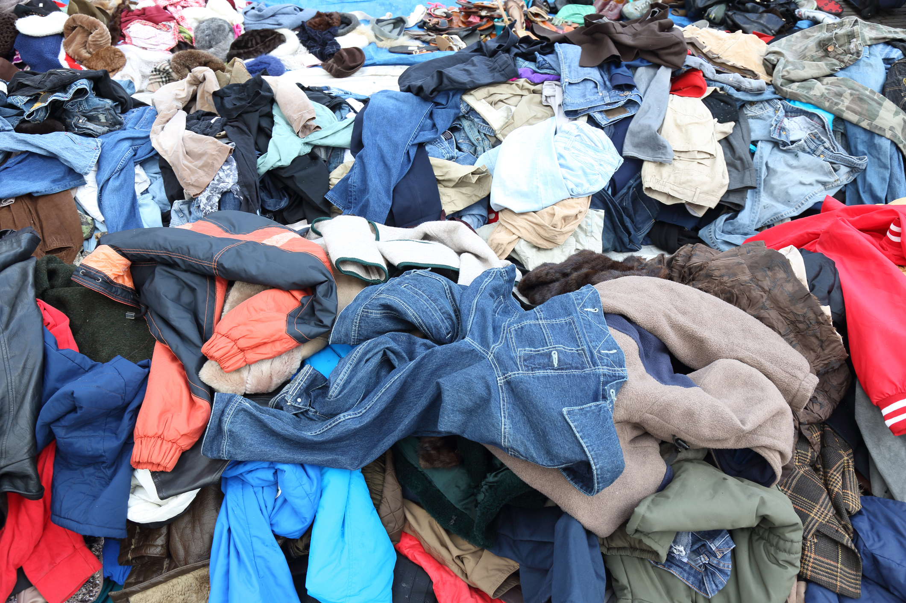
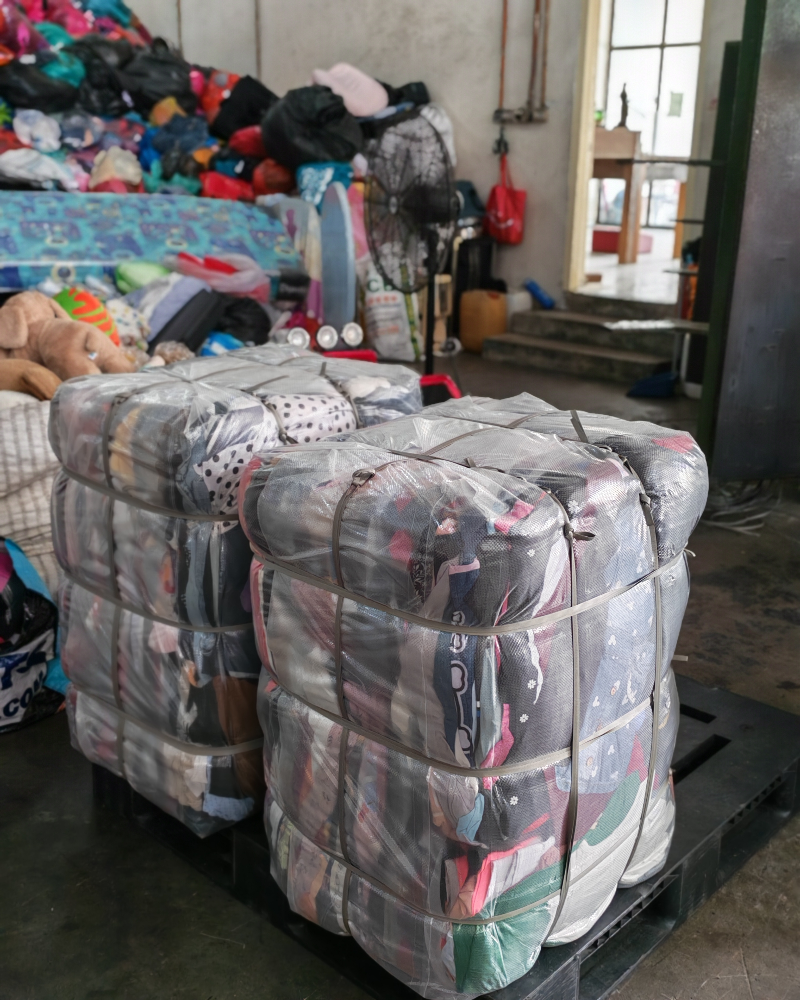
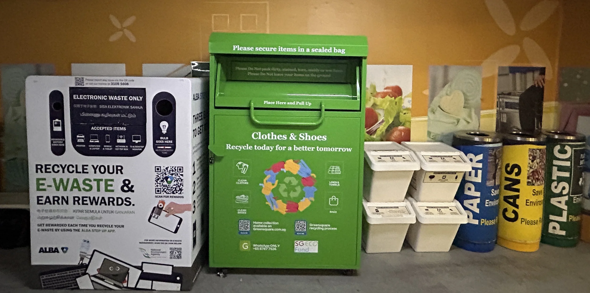
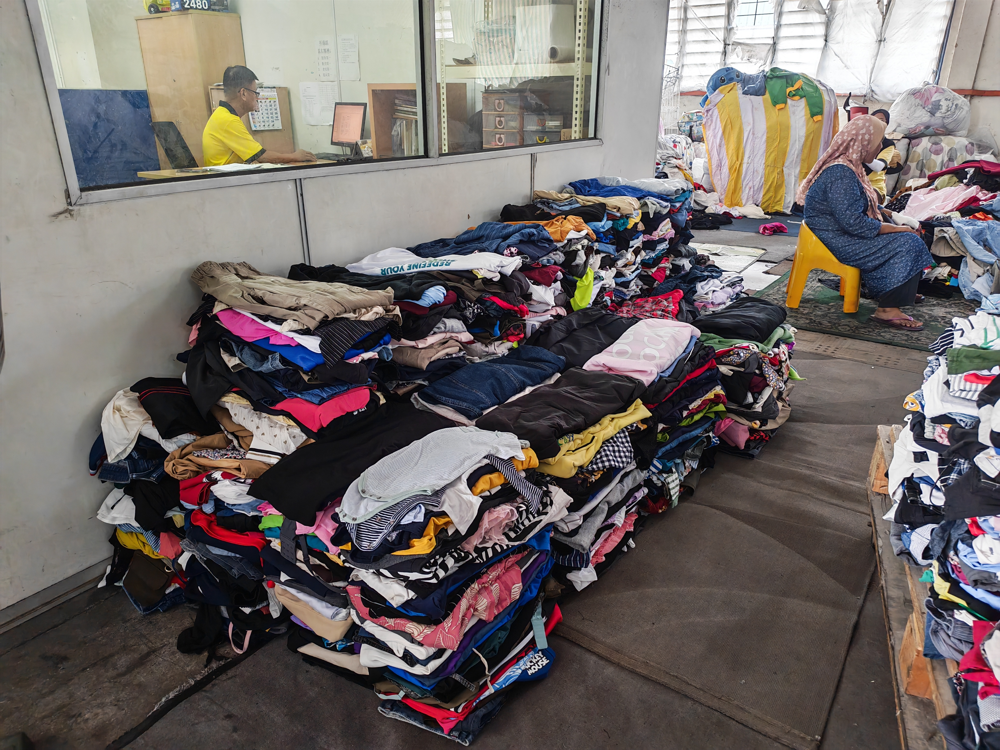
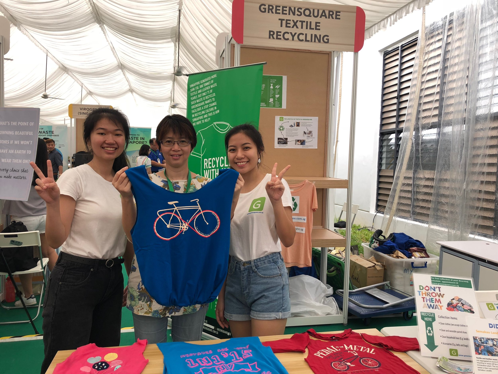

01
Waste Not
We love reuse: the majority of what we clear is reusable, in that it can be used by someone else in its current state.
TR‑04 · Textile Recycling
Ashoka Group runs Yellow Bin, the only social enterprise in Johor recognised and authorised by the City Council to carry out textile recycling collection, extending the same model across the causeway into Singapore.
Every donation is sorted, reused where possible, and routed to the families and causes that need it most.

We love reuse: the majority of what we clear is reusable, in that it can be used by someone else in its current state.

Our mission is to alleviate suffering. Every donation collected helps deliver assistance to underprivileged families in our care.

Bins placed across Malaysia and Singapore make donating effortless: clean clothes, shoes, linens and bags, collected and redirected responsibly.
Collection, sorting and hand‑delivery: the full cycle of a donation, across both the Johor and Singapore network.



Yellow Bin runs the collection network across Johor and extends the same model across the causeway into Singapore.
Yellow Bin · Johor, Malaysia
Yellow Bin upholds integrity in the name of charity: every contribution is entrusted to a designated charity partner, Amitabha Malaysia, ensuring donations reach the underprivileged families they're intended for.
Visit Yellow Bin